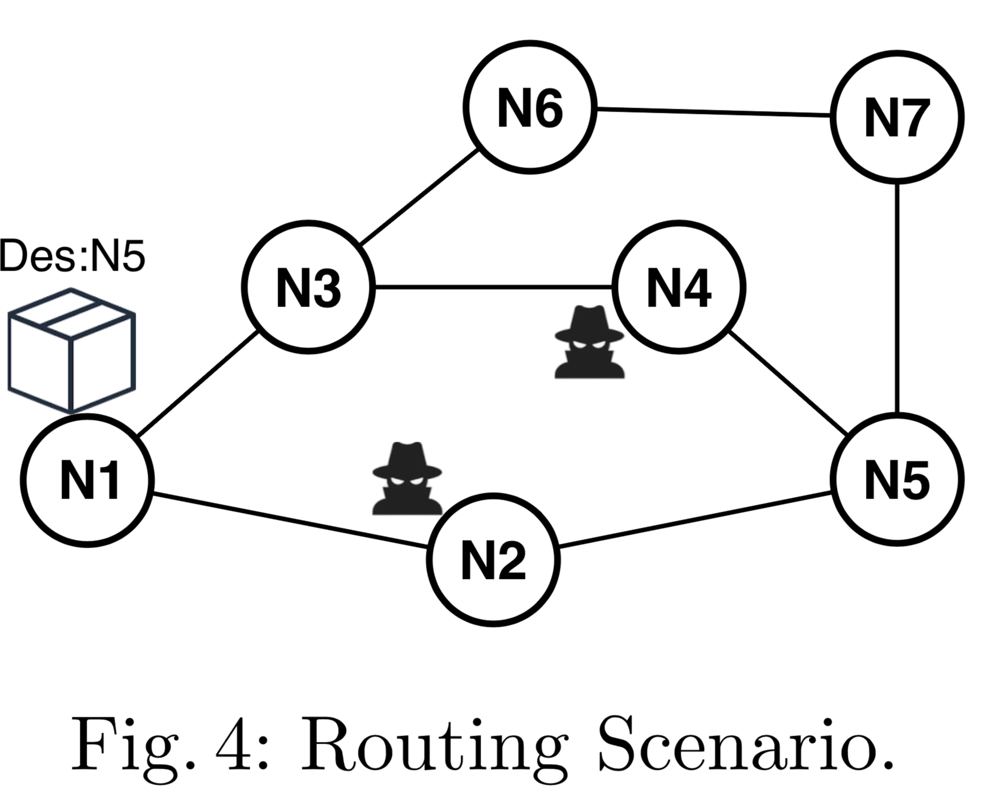

We consider a case study concerning routing games.
To evaluate our approach and assess its applicability for validation, we consider a case study on an interdomain routing application. We first define the game and propose a dynamic programming algorithm to solve the equilibrium by decomposing the problem into smaller and tractable sub games (Section 5.2). The results are present with a sensitivity analysis, illustrating how the system can choose a robust strategy effective for a range of threat landscapes, and a utility analysis by quantifying the defender's utility with Bayesian game compared to a greedy solution within the security context. 
A routing system is usually composed of smaller networks called nodes as shown in Figure. Since not all nodes are directly connected, packets often have to traverse several nodes and the task of ensuring connectivity between nodes is called interdomain routing. Each node could be owned by economic entities (Microsoft, ATT, etc.) and might be compromised by the attacker at any time. Therefore, it is natural to consider interdomain routing from a game-theoretic point of view. Specifically, game players are source nodes located on a network, aiming to send a package (i.e., starting at $N1$) to a unique destination node (i.e., $N5$). The interaction between players is dynamic and complex – asynchronous, sequential, and based on partial information - and the best strategy for each player as the adaptation response is updated as needed.